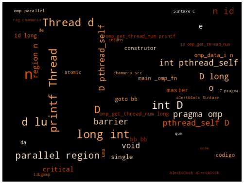

5 Construtores de Compartilhamento de Trabalho, master, single, critical e barrier
Resumo: Regiões Paralelas são fundamentais para a execução de aplicações no contexto de Computação Paralela. Mas elas não compartilham o trabalho entre as threads. Em uma região paralela, cada uma das threads executam uma cópia da função extraída da região demarcada como paralela. O código dessa região é colocado totalmente dentro da outlined function, mas a divisão do trabalho e a sincronização deve ser feita utilizando outros construtores como master, single, critical e barrier. Na prática desse capítulo, o objetivo é tentarmos resolvermos o soma de vetores somente com os construtores visto até o momento.
5.1 Introdução
5.2 Objetivos
- Explorar Construtores de Compartilhamento de Trabalho.1
- Construtores: master, single, critical e barrier.
6 Diretivas de Compilação
6.1 Construtor master
[alertblock]{Definição}
Define que uma parte de código deve ser executado pela thread master.
No documento de especificação OpenMP 4.5: 2.13.1 master Construct
[/alertblock]
[alertblock]{Sintaxe}
#pragma omp master
{
body;
}[/alertblock]
[alertblock]{Sintaxe}
#pragma omp parallel
{
#pragma omp master
{
/* code for master thread */
}
/* code for other threads */
}[/alertblock]
O GCC + a libgomp usam a verificação do id da thread para identificar a master thread. A ABI da libgomp.
int omp_get_thread_num(void)
/* It have no specific function, only test if it is the master. */A implementação do construtor master:
if (omp_get_thread_num() == 0){
bloco;
}- Um exemplo de uso de
master.
/* Codigo suprimido. */
int main() {
int id, n = 0;
printf("Thread[%d][%lu]: Before parallel region.\n", omp_get_thread_num(), (long int) pthread_self());
#pragma omp parallel num_threads(4) default(none) private(id)
{
// All threads execute this code.
id = omp_get_thread_num();
#pragma omp master
{
printf("Thread[%d][%lu]: Starting the Execution.\n", id, (long int) pthread_self());
}
// All threads execute this code.
printf("Thread[%d][%lu]: Working.\n", id, (long int) pthread_self());
#pragma omp master
{
printf("Thread[%d][%lu]: Ending the Parallel Region Execution.\n", id, (long int) pthread_self());
}
}
printf("Thread[%d][%lu]: After parallel region.\n", omp_get_thread_num(), (long int) pthread_self());
return 0;
}[terminal] rag@chamonix:~src/master-directive$ ./example-master-directive.exe Thread[0][18446744071812840768]: Before parallel region. Thread[0][18446744071812840768]: Starting the Execution. Thread[0][18446744071812840768]: Working. Thread[0][18446744071812840768]: Ending the Parallel Region Execution. Thread[1][18446744071812834880]: Working. Thread[2][18446744071804442176]: Working. Thread[3][18446744071796049472]: Working. Thread[0][18446744071812840768]: After parallel region. rag@chamonix:~src/master-directive$ [/terminal]
[framebreak]
- Código
GIMPLEgerado:
main () {
/* Supressed Code */
<bb 2>:
D.2770 = pthread_self ();
D.2771 = (long int) D.2770;
D.2772 = omp_get_thread_num ();
printf ("Thread[%d][%lu]: Before parallel region.\n", D.2772, D.2771);
__builtin_GOMP_parallel_start (main._omp_fn.0, 0B, 4);
main._omp_fn.0 (0B);
__builtin_GOMP_parallel_end ();
D.2779 = pthread_self ();
D.2780 = (long int) D.2779;
D.2781 = omp_get_thread_num ();
printf ("Thread[%d][%lu]: After parallel region.\n", D.2781, D.2780);
D.2782 = 0;
<L4>:
return D.2782;
}
main._omp_fn.0 (void * .omp_data_i) {
<bb 14>:
<bb 3>:
id = omp_get_thread_num ();
<bb 4>:
D.2796 = __builtin_omp_get_thread_num ();
if (D.2796 == 0)
goto <bb 5>;
else
goto <bb 6>;
<bb 6>:
<bb 7>:
D.2797 = pthread_self ();
D.2798 = (long int) D.2797;
printf ("Thread[%d][%lu]: Working.\n", id, D.2798);
<bb 8>:
D.2799 = __builtin_omp_get_thread_num ();
if (D.2799 == 0)
goto <bb 9>;
else
goto <bb 10>;
<bb 10>:
<bb 11>:
return;
<bb 9>:
D.2800 = pthread_self ();
D.2801 = (long int) D.2800;
printf ("Thread[%d][%lu]: Ending the Parallel Region Execution.\n", id, D.2801);
goto <bb 10>;
<bb 5>:
D.2802 = pthread_self ();
D.2803 = (long int) D.2802;
printf ("Thread[%d][%lu]: Starting the Execution.\n", id, D.2803);
goto <bb 6>;
}6.2 Construtor single
[alertblock]{Definição}
Define que uma parte do código deve ser executada por uma das threads do time, não necessariamente a master thread. As outras threads do time que não executam o código irão esperar em uma barreira implícita no final do construtor single, se a cláusula nowait não for utilizada.
No documento de especificação OpenMP 4.5: 2.7.3 single Construct
[/alertblock]
- A thread verifica se a região de código foi atribuída a ela. As outras threads do time irão aguardar na barreira, a menos que a cláusula
nowaitseja utilizada.
[alertblock]{Sintaxe}
#pragma omp single
{
body;
}[/alertblock]
[alertblock]{Sintaxe}
#pragma omp parallel
{
#pragma omp single
{
/* code for one single thread */
}
/* code for other threads */
}[/alertblock]
[alertblock]{cláusulas Admitidas}
private(list)
firstprivate(list)
copyprivate(list)
nowait[/alertblock]
- A
libgompusa as funções para implementar regiões que são executadas por uma única thread. A ABI dalibgomp.
bool GOMP_single_start(void)
void GOMP_barrier(void)- O Código expandido para o construtor
single:
if (GOMP_single_start()){
body;
}
GOMP_barrier ();- Um exemplo de uso de
single.
/* Codigo suprimido. */
int main() {
int id, n = 0;
printf("Thread[%d][%lu]: Before parallel region.\n", omp_get_thread_num(), (long int) pthread_self());
#pragma omp parallel num_threads(4) default(none) private(id)
{
id = omp_get_thread_num();
#pragma omp single
{
printf("Thread[%d][%lu]: Starting the Execution.\n", id, (long int) pthread_self());
}
printf("Thread[%d][%lu]: Working.\n", id, (long int) pthread_self());
#pragma omp single
{
printf("Thread[%d][%lu]: Ending the Parallel Region Execution.\n", id, (long int) pthread_self());
}
}
printf("Thread[%d][%lu]: After parallel region.\n", omp_get_thread_num(), (long int) pthread_self());
return 0;
}[terminal] rag@chamonix:~src/single-directive$ ./example-single-directive.exe Thread[0][18446744073167636352]: Before parallel region. Thread[1][18446744073157318400]: Starting the Execution. Thread[0][18446744073167636352]: Working. Thread[0][18446744073167636352]: Ending the Parallel Region Execution. Thread[1][18446744073157318400]: Working. Thread[2][18446744073148925696]: Working. Thread[3][18446744073140532992]: Working. Thread[0][18446744073167636352]: After parallel region. rag@chamonix:~src/single-directive$ [/terminal]
- Código
GIMPLEgerado:
main (){
<bb 2>:
n = 0;
D.2771 = pthread_self ();
D.2772 = (long int) D.2771;
D.2773 = omp_get_thread_num ();
printf ("Thread[%d][%lu]: Before parallel region.\n", D.2773, D.2772);
__builtin_GOMP_parallel_start (main._omp_fn.0, 0B, 4);
main._omp_fn.0 (0B);
__builtin_GOMP_parallel_end ();
D.2780 = pthread_self ();
D.2781 = (long int) D.2780;
D.2782 = omp_get_thread_num ();
printf ("Thread[%d][%lu]: After parallel region.\n", D.2782, D.2781);
D.2783 = 0;
<L4>:
return D.2783;
}
main._omp_fn.0 (void * .omp_data_i) {
<bb 14>:
<bb 3>:
id = omp_get_thread_num ();
<bb 4>:
D.2799 = __builtin_GOMP_single_start ();
if (D.2799 == 1)
goto <bb 5>;
else
goto <bb 6>;
<bb 6>:
__builtin_GOMP_barrier ();
<bb 7>:
D.2800 = pthread_self ();
D.2801 = (long int) D.2800;
printf ("Thread[%d][%lu]: Working.\n", id, D.2801);
<bb 8>:
D.2802 = __builtin_GOMP_single_start ();
if (D.2802 == 1)
goto <bb 9>;
else
goto <bb 10>;
<bb 10>:
<bb 11>:
return;
<bb 9>:
D.2803 = pthread_self ();
D.2804 = (long int) D.2803;
printf ("Thread[%d][%lu]: Ending the Parallel Region Execution.\n", id, D.2804);
goto <bb 10>;
<bb 5>:
D.2805 = pthread_self ();
D.2806 = (long int) D.2805;
printf ("Thread[%d][%lu]: Starting the Execution.\n", id, D.2806);
goto <bb 6>;
}6.3 Construtor critical
[alertblock]{Definição}
Restringe a execução do bloco associado ao construtor para uma única thread. Implementação de regiões críticas.
No documento de especificação OpenMP 4.5: 2.13.2 critical Construct
[/alertblock]
- O construtor critical pode ser usado como:
[alertblock]{Sintaxe}
#pragma omp critical
{
body;
}[/alertblock]
[alertblock]{Sintaxe}
#pragma omp parallel
{
#pragma omp critical
{
/* critical region code */
}
}[/alertblock]
- A
libgompusa as funções para implementar regiões que são críticas e que podem gerar uma condição de corrida. AABIdalibgomp.
void GOMP_critical_start(void)
void GOMP_critical_end(void)- O Código expandido para o construtor
critical:
GOMP_critical_start(void);
body;
GOMP_critical_end(void);- Usa operações de lock
omp_set_lockeomp_unset_lockcom um nome sendo transformado em uma variável parecida com a declaração:
omp_lock_t gomp_critical_user_<name> __attribute__((common))- Um exemplo de uso de
critical.
int main() {
int id, n = 0;
printf("Thread[%d][%lu]: Before parallel region.\n", omp_get_thread_num(), (long int) pthread_self());
#pragma omp parallel num_threads(4) default(none) private(id) shared(n)
{
id = omp_get_thread_num();
#pragma omp critical
{
printf("Thread[%d][%lu]: Before. n: %d\n", id, (long int) pthread_self(), n);
n = n + id;
printf("Thread[%d][%lu]: After. n: %d\n", id, (long int) pthread_self(), n);
}
}
printf("Thread[%d][%lu]: After parallel region.\n", omp_get_thread_num(), (long int) pthread_self());
printf("Thread[%d][%lu]: Final.. n: %d\n", omp_get_thread_num(), (long int) pthread_self(), n);
return 0;
}[terminal] rag@chamonix:~src/critical-directive$ ./example-critical-directive.exe Thread[0][362039168]: Before parallel region. Thread[0][362039168]: Before. n: 0 Thread[0][362039168]: After.. n: 0 Thread[2][343328512]: Before. n: 0 Thread[2][343328512]: After.. n: 2 Thread[3][334935808]: Before. n: 2 Thread[3][334935808]: After.. n: 5 Thread[1][351721216]: Before. n: 5 Thread[1][351721216]: After.. n: 6 Thread[0][362039168]: After parallel region. Thread[0][362039168]: Final.. n: 6 rag@chamonix:~src/critical-directive$ [/terminal]
- Código
GIMPLEgerado:
main () {
<bb 2>:
n = 0;
D.2771 = pthread_self ();
D.2772 = (long int) D.2771;
D.2773 = omp_get_thread_num ();
printf ("Thread[%d][%lu]: Before parallel region.\n", D.2773, D.2772);
.omp_data_o.1.n = n;
__builtin_GOMP_parallel_start (main._omp_fn.0, &.omp_data_o.1, 4);
main._omp_fn.0 (&.omp_data_o.1);
__builtin_GOMP_parallel_end ();
n = .omp_data_o.1.n;
D.2778 = pthread_self ();
D.2779 = (long int) D.2778;
D.2780 = omp_get_thread_num ();
printf ("Thread[%d][%lu]: After parallel region.\n", D.2780, D.2779);
D.2781 = pthread_self ();
D.2782 = (long int) D.2781;
printf ("Thread[%d][%lu]: After. n: %d\n", id, D.2782, n);
D.2783 = 0;
<L0>:
return D.2783;
}
main._omp_fn.0 (struct .omp_data_s.0 * .omp_data_i) {
int n [value-expr: .omp_data_i->n];
<bb 8>:
<bb 3>:
id = omp_get_thread_num ();
<bb 4>:
__builtin_GOMP_critical_start ();
D.2798 = pthread_self ();
D.2799 = (long int) D.2798;
D.2800 = .omp_data_i->n;
printf ("Thread[%d][%lu]: Before. n: %d\n", id, D.2799, D.2800);
D.2801 = .omp_data_i->n;
D.2802 = D.2801 + id;
.omp_data_i->n = D.2802;
D.2803 = pthread_self ();
D.2804 = (long int) D.2803;
D.2805 = .omp_data_i->n;
printf ("Thread[%d][%lu]: After. n: %d\n", id, D.2804, D.2805);
__builtin_GOMP_critical_end ();
<bb 5>:
return;
}6.4 Construtor atomic
[alertblock]{Definição}
Garante que um local de armazenamento específico seja acessado atomicamente, bloqueando o acesso de múltiplas threads para leitura e escrita simultâneos que podem resultar em inconsitências.
No documento de especificação OpenMP 4.5: 2.13.6 atomic Construct
[/alertblock]
[alertblock]{Sintaxe}
#pragma omp atomic
{
body;
}[/alertblock]
[alertblock]{Cláusulas Admitidas}
read
write
update
capture[/alertblock]
[alertblock]{Sintaxe}
#pragma omp parallel
{
#pragma omp atomic
{
/* code for atomic execution */
}
}[/alertblock]
- O
GCC+ alibgompusam chamadas de funções para demarcar a região de código que deve ter execução atomica.
void GOMP_atomic_enter (void)
void GOMP_atomic_exit (void)- A implementação do construtor
atomic:
void GOMP_atomic_enter (void);
block;
void GOMP_atomic_exit (void);- Um exemplo de uso de
atomic.
/* Codigo suprimido. */
int main() {
int id, n = 0;
printf("Thread[%d][%lu]: Before parallel region.\n", omp_get_thread_num(), (long int) pthread_self());
#pragma omp parallel num_threads(4) default(none) private(id) shared(n)
{
id = omp_get_thread_num();
printf("Thread[%d][%lu]: Before. n: %d\n", id, (long int) pthread_self(), n);
#pragma omp atomic update
n = n + pow(id,3);
printf("Thread[%d][%lu]: After. n: %d\n", id, (long int) pthread_self(), n);
}
printf("Thread[%d][%lu]: After parallel region.\n", omp_get_thread_num(), (long int) pthread_self());
printf("Thread[%d][%lu]: Final.. n: %d\n", omp_get_thread_num(), (long int) pthread_self(), n);
return 0;
}[terminal] rag@chamonix:~src/atomic-directive$ ./example-atomic-directive.exe Thread[0][140092481136512]: Before parallel region. Thread[0][140092481136512]: Before. n: 0 Thread[1][140092481132096]: Before. n: 0 Thread[0][140092481136512]: After. n: 0 Thread[2][140092472739392]: Before. n: 0 Thread[2][140092472739392]: After. n: 9 Thread[3][140092464346688]: Before. n: 0 Thread[3][140092464346688]: After. n: 36 Thread[1][140092481132096]: After. n: 1 Thread[0][140092481136512]: After parallel region. Thread[0][140092481136512]: Final.. n: 36 rag@chamonix:~src/atomic-directive$ [/terminal]
[framebreak]
- Código
GIMPLEgerado:
main._omp_fn.0 (struct .omp_data_s.3 & restrict .omp_data_i)
{
int n [value-expr: *.omp_data_i->n];
long int D.4787;
long unsigned int D.4786;
int n.1;
int * D.4784;
int D.4783;
int D.4782;
unsigned int D.4781;
int D.4780;
double D.4779;
double D.4778;
int D.4777;
int D.4776;
unsigned int D.4775;
int * D.4774;
double D.4773;
double D.4772;
long int D.4771;
long unsigned int D.4770;
int n.0;
int * D.4768;
int id;
<bb 8> :
<bb 3> :
id = omp_get_thread_num ();
D.4768 = .omp_data_i->n;
n.0 = *D.4768;
D.4770 = pthread_self ();
D.4771 = (long int) D.4770;
printf ("Thread[%d][%lu]: Before. n: %d\n", id, D.4771, n.0);
D.4772 = (double) id;
D.4773 = pow (D.4772, 3.0e+0);
D.4774 = .omp_data_i->n;
D.4775 = __atomic_load_4 (D.4774, 0);
D.4776 = (int) D.4775;
D.4777 = D.4776;
<bb 4> :
D.4778 = (double) D.4777;
D.4779 = D.4778 + D.4773;
D.4780 = (int) D.4779;
D.4781 = __sync_val_compare_and_swap_4 (D.4774, D.4777, D.4780);
D.4782 = (int) D.4781;
D.4783 = D.4777;
D.4777 = D.4782;
if (D.4782 != D.4783)
goto <bb 4>; [0.00%]
else
goto <bb 5>; [100.00%]
<bb 5> :
D.4784 = .omp_data_i->n;
n.1 = *D.4784;
D.4786 = pthread_self ();
D.4787 = (long int) D.4786;
printf ("Thread[%d][%lu]: After. n: %d\n", id, D.4787, n.1);
return;
}
main ()
{
int D.4766;
unsigned int D.4764;
int D.4765;
unsigned int D.4762;
int D.4763;
int n;
int id;
int D.4748;
struct .omp_data_s.3 .omp_data_o.4;
int * D.4758;
int * D.4757;
int * D.4756;
<bb 2> :
n = 0;
_1 = pthread_self ();
_2 = (long int) _1;
_3 = omp_get_thread_num ();
printf ("Thread[%d][%lu]: Before parallel region.\n", _3, _2);
.omp_data_o.4.n = &n;
__builtin_GOMP_parallel (main._omp_fn.0, &.omp_data_o.4, 4, 0);
.omp_data_o.4 = {CLOBBER};
_4 = pthread_self ();
_5 = (long int) _4;
_6 = omp_get_thread_num ();
printf ("Thread[%d][%lu]: After parallel region.\n", _6, _5);
n.2_7 = n;
_8 = pthread_self ();
_9 = (long int) _8;
_10 = omp_get_thread_num ();
printf ("Thread[%d][%lu]: Final.. n: %d\n", _10, _9, n.2_7);
D.4748 = 0;
n = {CLOBBER};
<bb 3> :
<L1>:
return D.4748;
}6.5 Construtor barrier
[alertblock]{Definição}
Define que uma barreira explícita de sincronização das threads.
No documento de especificação OpenMP 4.5: 2.13.3 barrier Construct
[/alertblock]
[alertblock]{Sintaxe}
#pragma omp barrier[/alertblock]
[alertblock]{Sintaxe}
#pragma omp parallel
{
/*Codigo sendo executado por threads em paralelo. */
#pragma omp barrier
/* Continuacao */
}[/alertblock]
- A
libgompusa as funções para implementar regiões que são críticas e que podem gerar uma condição de corrida. A ABI dalibgomp.
void GOMP_barrier(void)- O Código expandido para o construtor
barrier:
/* Codigo com execucao paralela. */
GOMP_barrier();- Um exemplo de uso de
barrier.
int main() {
int id, n = 0;
printf("Thread[%d][%lu]: Before parallel region.\n", omp_get_thread_num(), (long int) pthread_self());
#pragma omp parallel num_threads(4) default(none) private(id) shared(n)
{
id = omp_get_thread_num();
#pragma omp critical
{
printf("Thread[%d][%lu]: Before. n: %d\n", id, (long int) pthread_self(), n);
n = n + id;
printf("Thread[%d][%lu]: After. n: %d\n", id, (long int) pthread_self(), n);
}
printf("Thread[%d][%lu]: Before barrier.\n", id, (long int) pthread_self());
#pragma omp barrier
printf("Thread[%d][%lu]: After barrier.\n", id, (long int) pthread_self());
} // implicit barrier on parallel region end.
printf("Thread[%d][%lu]: After parallel region.\n", omp_get_thread_num(), (long int) pthread_self());
printf("Thread[%d][%lu]: After. n: %d\n", omp_get_thread_num(), (long int) pthread_self(), n);
return 0;
}[terminal] rag@chamonix:~src/barrier-directive$ ./example-barrier-directive.exe Thread[0][329168768]: Before parallel region. Thread[0][329168768]: Before. n: 0 Thread[0][329168768]: After. n: 0 Thread[0][329168768]: Before barrier. Thread[1][318850816]: Before. n: 0 Thread[1][318850816]: After. n: 1 Thread[1][318850816]: Before barrier. Thread[3][302065408]: Before. n: 1 Thread[3][302065408]: After. n: 4 Thread[3][302065408]: Before barrier. Thread[2][310458112]: Before. n: 4 Thread[2][310458112]: After. n: 6 Thread[2][310458112]: Before barrier. Thread[1][318850816]: After barrier. Thread[3][302065408]: After barrier. Thread[0][329168768]: After barrier. Thread[2][310458112]: After barrier. Thread[0][329168768]: After parallel region. Thread[0][329168768]: After. n: 6 rag@chamonix:~src/barrier-directive$ [/terminal]
[framebreak]
- Código
GIMPLEgerado:
main (){
<bb 2>:
n = 0;
D.2771 = pthread_self ();
D.2772 = (long int) D.2771;
D.2773 = omp_get_thread_num ();
printf ("Thread[%d][%lu]: Before parallel region.\n", D.2773, D.2772);
.omp_data_o.1.n = n;
__builtin_GOMP_parallel_start (main._omp_fn.0, &.omp_data_o.1, 4);
main._omp_fn.0 (&.omp_data_o.1);
__builtin_GOMP_parallel_end ();
n = .omp_data_o.1.n;
D.2782 = pthread_self ();
D.2783 = (long int) D.2782;
D.2784 = omp_get_thread_num ();
printf ("Thread[%d][%lu]: After parallel region.\n", D.2784, D.2783);
D.2785 = pthread_self ();
D.2786 = (long int) D.2785;
printf ("Thread[%d][%lu]: After. n: %d\n", id, D.2786, n);
D.2787 = 0;
<L0>:
return D.2787;
}
main._omp_fn.0 (struct .omp_data_s.0 * .omp_data_i) {
int n [value-expr: .omp_data_i->n];
int id;
<bb 8>:
<bb 3>:
id = omp_get_thread_num ();
<bb 4>:
__builtin_GOMP_critical_start ();
D.2802 = pthread_self ();
D.2803 = (long int) D.2802;
D.2804 = .omp_data_i->n;
printf ("Thread[%d][%lu]: Before. n: %d\n", id, D.2803, D.2804);
D.2805 = .omp_data_i->n;
D.2806 = D.2805 + id;
.omp_data_i->n = D.2806;
D.2807 = pthread_self ();
D.2808 = (long int) D.2807;
D.2809 = .omp_data_i->n;
printf ("Thread[%d][%lu]: After. n: %d\n", id, D.2808, D.2809);
__builtin_GOMP_critical_end ();
<bb 5>:
D.2810 = pthread_self ();
D.2811 = (long int) D.2810;
printf ("Thread[%d][%lu]: Before barrier.\n", id, D.2811);
__builtin_GOMP_barrier ();
D.2812 = pthread_self ();
D.2813 = (long int) D.2812;
printf ("Thread[%d][%lu]: After barrier.\n", id, D.2813);
return;
}6.6 Prática: Exercício de Implementação
Soma de Vetores com Regiões Paralelas
Implementamos uma versões do exemplo
soma de vetoresutilizando processos com memória compartilhada e compthreads\((\checkmark)\)Implemente uma versão do exemplo
soma de vetoresutilizando a diretivaparallele recursos vistos até o momento.Execute os exemplos
vectoraddutilizando o construtorparallel(OpenMP-ARB 2011) (OpenMP-ARB 2013) (OpenMP-ARB 2015), com particionamento de iteraçõesestáticaedinâmica.
6.7 Relatório
- Escreva sobre as alterações que foram necessárias para a execução das versões paralelas do soma de vetores utilizando
#pragma omp parallelcom particionamento estático e dinâmico. Complemente o relatório comparativo da prática anterior utilizando a versão sequencial e compthreads.
6.8 Considerações Finais
O OpenMP permite identificar oportunidades de paralelismo, dividir o trabalho de forma equilibrada, sincronizar apenas quando necessário e medir continuamente o impacto das mudanças dentro do código. Sendo flexível e portátil, ele permite que você comece paralelizando um único laço e avançando para arquiteturas mais complexas, ajustando scheduling, explorando tarefas independentes e combinando paralelismo com outras técnicas de otimização.
O próximo passo é continuar testando diferentes configurações, medindo resultados, identificando gargalos e refinando o código. A prática constante e a análise crítica são as chaves para dominar o OpenMP e, mais amplamente, a programação paralela.
6.9 Word Cloud
